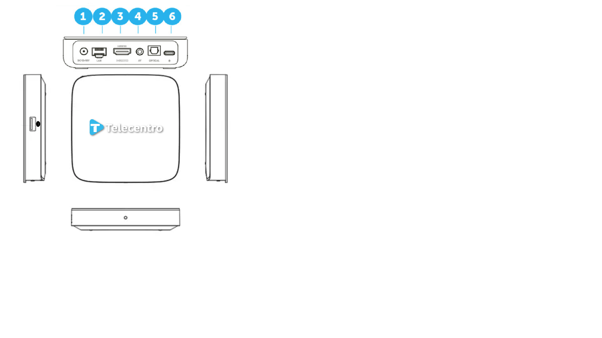

Posa el mouse sobre alguna parte de la imagen para ver la descripción.
1-DC Power Jack: Entrada para la alimentación del dispositivo.
2-RJ45 (Gigabit Ethernet): Para la conexión a Internet mediante cable Ethernet.
3-HDMI 2.1 Out: Para la conexión a la TV.
4-AV Jack: Entrada para conexiones de audio y video analógico.
5-Puerto Óptico: Para la salida de audio digital (deshabilitado).
6-Puerto USB-C
Puerto USB
El botón lateral tiene el siguiente comportamiento:
Click: Sale del modo standby (si está en standby).
3-4 segundos: Emparejamiento del control remoto (RCU).
10 segundos: Menú de restablecimiento de fábrica.
Lateral Derecho
LED Blanco: Indica que el dispositivo está encendido y funcionando correctamente.
LED Rojo: Indica que el dispositivo está en modo de espera (standby).